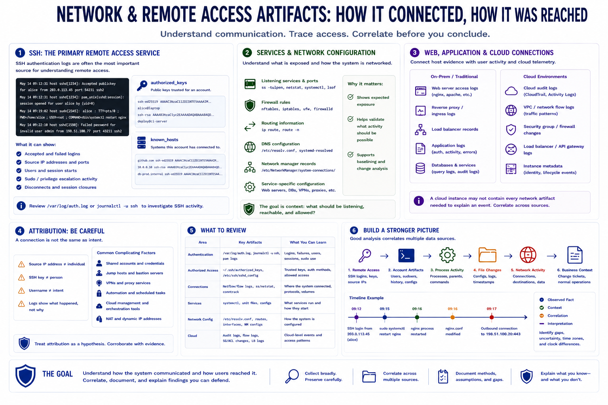

Network and Remote Access Artifacts
Connecting to LMS... Progress: in progress

Narration
Network and remote access artifacts help analysts understand how a Linux system communicated and how users reached it. SSH is often the most important remote access service. Authentication logs may show accepted and failed logins, source addresses, users, session starts, and sudo activity after login. Authorized_keys files can show which public keys were trusted for an account, while known_hosts may show systems the account connected to.
Listening services and network configuration provide context. Analysts may review configured services, active listening ports, firewall rules, routing information, DNS settings, network manager records, and service-specific configuration. The goal is to understand what exposure was expected and whether observed activity fits the system's purpose.
Web access logs, reverse proxy logs, load balancer records, and application logs can help connect Linux host evidence to user activity. In cloud environments, host evidence should often be correlated with cloud audit logs, flow logs, security group changes, load balancer logs, and instance metadata considerations. A cloud instance may not contain every network artifact needed to explain an event.
Remote access analysis should be careful about attribution. A source IP address, SSH key, or username may support a timeline, but it rarely proves a person's intent by itself. Shared accounts, jump hosts, VPNs, automation, and cloud management tools can all complicate interpretation. Strong analysis correlates remote access records with account artifacts, process activity, file changes, and business context.